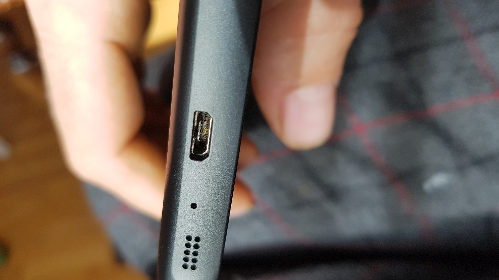
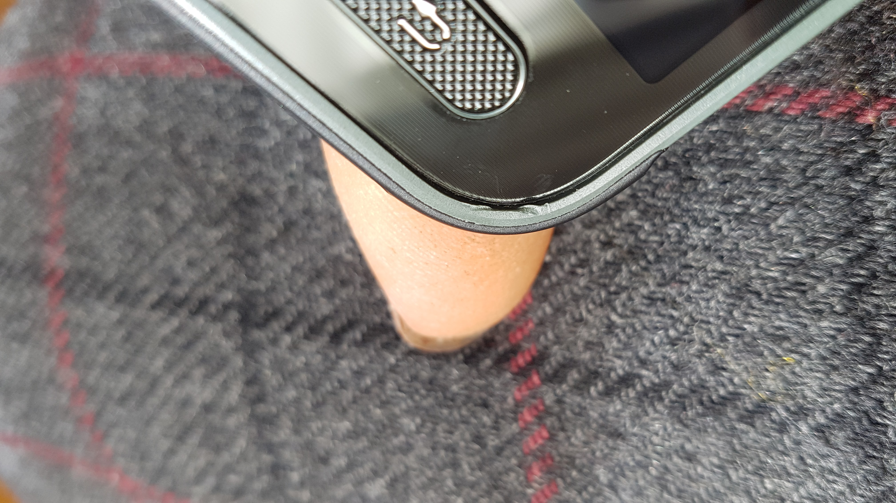
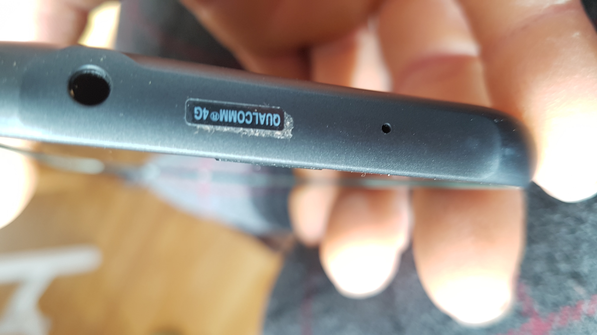
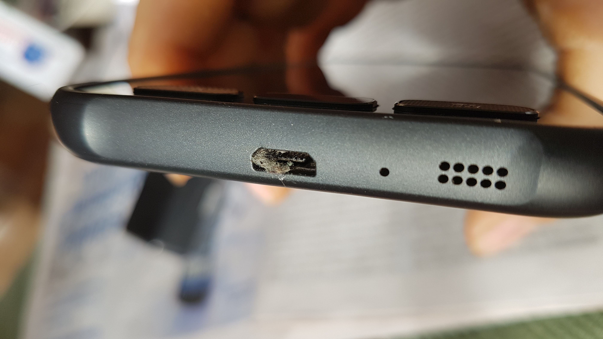

Return phone
Device received has several marks of use:
- Inside of USB micro port is very dirty, indicating that the phone was in dirty environments for an extended period.
- Screen bezel is damaged at one corner from a prying instrument. Apparently the device was opened up for service (screen replacement perhaps?) which makes it very much not a “New” device.
This is clearly a used device, therefore I would like to return it for a full refund, with Seller paying return shipping.
   